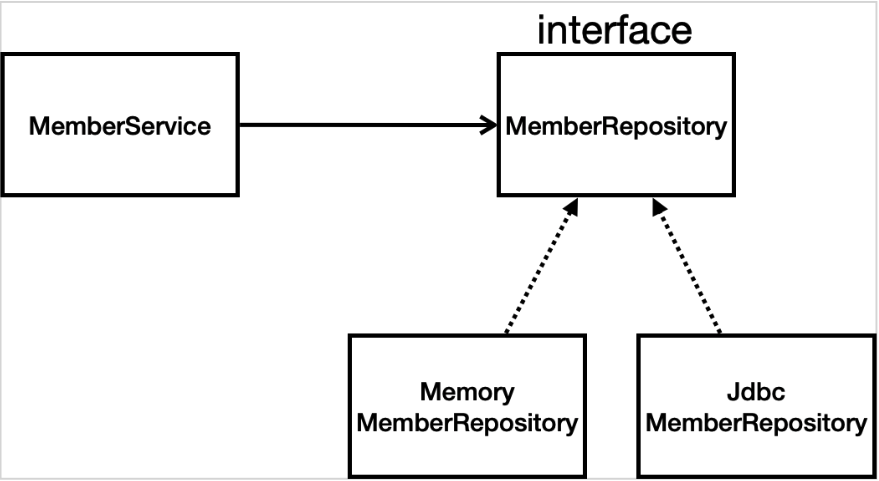
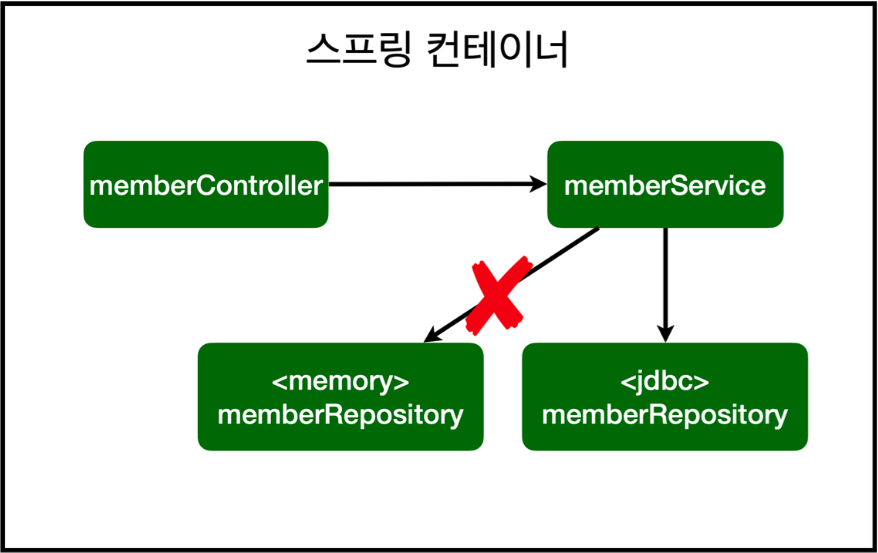

테이블 관리를 위해 프로젝트 루트에 sql/ddl.sql 생성
*테이블 추가*
drop table if exists member CASCADE; create table member ( id bigint generated by default as identity, name varchar(255), primary key(id) )
*데이터 insert*
insert into member(name) values ('spring')
build.gradle 파일에 jdbc,h2 데이터 베이스 관련 라이브러리 추가
implementation 'org.springframework.boot:spring-boot-starter-jdbc' runtimeOnly 'com.h2database:h2'
스프링 부트 데이터베이스 연결 설정 추가 ( resources/application.reoperties )
spring.datasource.url=jdbc:h2:tcp://localhost/~/test spring.datasource.driver-class-name=org.h2.Driver spring.datasource.username=sa spring.datasource.password=스프링부트 2.4부터는 spring.datasource.username=sa를 꼭 추가해야한다.
주의! 이렇게 JDBC API로 직접 코딩하는건 2000년대 초반 이야기이다. 따라서 고대 개발자들이 이렇게 고생했구나 하고 참고만 할 것
package hello.hellospring.repository;
import hello.hellospring.domain.Member;
import org.springframework.jdbc.datasource.DataSourceUtils;
import javax.sql.DataSource;
import java.sql.*;
import java.util.ArrayList;
import java.util.List;
import java.util.Optional;
public class JdbcMemberRepository implements MemberRepository {
private final DataSource dataSource;
public JdbcMemberRepository(DataSource dataSource) {
this.dataSource = dataSource;
}
@Override
public Member save(Member member) {
String sql = "insert into member(name) values(?)";
Connection conn = null;
PreparedStatement pstmt = null;
ResultSet rs = null;
try {
conn = getConnection();
pstmt = conn.prepareStatement(sql, Statement.RETURN_GENERATED_KEYS);
pstmt.setString(1, member.getName());
pstmt.executeUpdate();
rs = pstmt.getGeneratedKeys();
if (rs.next()) {
member.setId(rs.getLong(1));
} else {
throw new SQLException("id 조회 실패");
}
return member;
} catch (Exception e) {
throw new IllegalStateException(e);
} finally {
close(conn, pstmt, rs);
}
}
@Override
public Optional findById(Long id) {
String sql = "select * from member where id = ?";
Connection conn = null;
PreparedStatement pstmt = null;
ResultSet rs = null;
try {
conn = getConnection();
pstmt = conn.prepareStatement(sql);
pstmt.setLong(1, id);
rs = pstmt.executeQuery();
if(rs.next()) {
Member member = new Member();
member.setId(rs.getLong("id"));
member.setName(rs.getString("name"));
return Optional.of(member);
} else {
return Optional.empty();
}
} catch (Exception e) {
throw new IllegalStateException(e);
} finally {
close(conn, pstmt, rs);
}
}
@Override
public List<Member> findAll() {
String sql = "select * from member";
Connection conn = null;
PreparedStatement pstmt = null;
ResultSet rs = null;
try {
conn = getConnection();
pstmt = conn.prepareStatement(sql);
rs = pstmt.executeQuery();
List<Member> members = new ArrayList<>();
while(rs.next()) {
Member member = new Member();
member.setId(rs.getLong("id"));
member.setName(rs.getString("name"));
members.add(member);
}
return members;
} catch (Exception e) {
throw new IllegalStateException(e);
} finally {
close(conn, pstmt, rs);
}
}
@Override
public Optional<Member> findByName(String name) {
String sql = "select * from member where name = ?";
Connection conn = null;
PreparedStatement pstmt = null;
ResultSet rs = null;
try {
conn = getConnection();
pstmt = conn.prepareStatement(sql);
pstmt.setString(1, name);
rs = pstmt.executeQuery();
if(rs.next()) {
Member member = new Member();
member.setId(rs.getLong("id"));
member.setName(rs.getString("name"));
return Optional.of(member);
}
return Optional.empty();
} catch (Exception e) {
throw new IllegalStateException(e);
} finally {
close(conn, pstmt, rs);
}
}
private Connection getConnection() {
return DataSourceUtils.getConnection(dataSource);
}
private void close(Connection conn, PreparedStatement pstmt, ResultSet rs) {
try {
if (rs != null) {
rs.close();
}
} catch (SQLException e) {
e.printStackTrace();
}
try {
if (pstmt != null) {
pstmt.close();
}
} catch (SQLException e) {
e.printStackTrace();
}
try {
if (conn != null) {
close(conn);
}
} catch (SQLException e) {
e.printStackTrace();
}
}
private void close(Connection conn) throws SQLException {
DataSourceUtils.releaseConnection(conn, dataSource);
}
}
스프링 설정 변경
package hello.hellospring;
import hello.hellospring.repository.JdbcMemberRepository;
import hello.hellospring.repository.JdbcTemplateMemberRepository;
import hello.hellospring.repository.MemberRepository;
import hello.hellospring.repository.MemoryMemberRepository;
import hello.hellospring.service.MemberService;
import org.springframework.context.annotation.Bean;
import org.springframework.context.annotation.Configuration;
import javax.sql.DataSource;
@Configuration
public class SpringConfig {
private final DataSource dataSource;
public SpringConfig(DataSource dataSource) {
this.dataSource = dataSource;
}
@Bean
public MemberService memberService() {
return new MemberService(memberRepository());
}
@Bean
public MemberRepository memberRepository() {
// return new MemoryMemberRepository();
return new JdbcMemberRepository(dataSource);
}
DataSource는 데이터베이스 커넥션을 획득할 때 사용하는 객체다. 스프링 부트는 데이터베이스 커넥션 정보를 바탕으로 DataSource를 생성하고 스프링 빈으로 만들어둔다. 그래서 DI를 받을 수 있다.
구현 클래스 추가 이미지
스프링 설정 이미지
@SpringBootTest @Transactional @Autowired MemberService memberService; @Autowired MemberRepository memberRepository;
1. beforeEach , afterEach 제거
2. 테스트이기 때문에 @Autowired 추가로 간단하게 변형
JdbcTemplateMemberRepository 파일
package hello.hellospring.repository;
import hello.hellospring.domain.Member;
import org.springframework.beans.factory.annotation.Autowired;
import org.springframework.jdbc.core.JdbcTemplate;
import org.springframework.jdbc.core.RowMapper;
import org.springframework.jdbc.core.namedparam.MapSqlParameterSource;
import org.springframework.jdbc.core.simple.SimpleJdbcInsert;
import javax.sql.DataSource;
import java.sql.ResultSet;
import java.sql.SQLException;
import java.util.*;
public class JdbcTemplateMemberRepository implements MemberRepository{
private final JdbcTemplate jdbcTemplate;
//생성자가 하나일경우 @Autowired 생략 가능
public JdbcTemplateMemberRepository(DataSource dataSource) {
this.jdbcTemplate = new JdbcTemplate(dataSource);
}
@Override
public Member save(Member member) {
SimpleJdbcInsert jdbcInsert = new SimpleJdbcInsert(jdbcTemplate);
jdbcInsert.withTableName("member").usingGeneratedKeyColumns("id");
Map<String, Object> parameters = new HashMap<>();
parameters.put("name", member.getName());
Number key = jdbcInsert.executeAndReturnKey(new MapSqlParameterSource(parameters));
member.setId(key.longValue());
return member;
}
@Override
public Optional<Member> findById(Long id) {
List<Member> result = jdbcTemplate.query("select * from member where id=?", memberRowMapper(),id);
return result.stream().findAny();
}
@Override
public Optional<Member> findByName(String name) {
List<Member> result = jdbcTemplate.query("select * from member where name=?", memberRowMapper(),name);
return result.stream().findAny();
}
@Override
public List<Member> findAll() {
return jdbcTemplate.query("select * from member", memberRowMapper());
}
private RowMapper<Member> memberRowMapper() {
return (rs, rowNum) -> {
Member member = new Member();
member.setId(rs.getLong("id"));
member.setName(rs.getString("name"));
return member;
};
}
}
springconfig 파일 저장소 수정
@Bean
public MemberRepository memberRepository() {
//return new MemoryMemberRepository();
//return new JdbcMemberRepository(dataSource);
return new JdbcTemplateMemberRepository(dataSource);
}
테스트는 MemberServiceIntegrationTest 실행
build.gradle 파일에 JPA, h2 데이터 베이스 관련 라이브러리 추가
dependencies {
implementation 'org.springframework.boot:spring-boot-starter-thymeleaf'
implementation 'org.springframework.boot:spring-boot-starter-web'
// implementation 'org.springframework.boot:spring-boot-starter-jdbc'
implementation 'org.springframework.boot:spring-boot-starter-data-jpa'
runtimeOnly 'com.h2database:h2'
testImplementation 'org.springframework.boot:spring-boot-starter-test'
}
스프링 부트에 JPA 설정 추가 (resources/apllcation.properties)
spring.datasource.url=jdbc:h2:tcp://localhost/~/test spring.datasource.driver-class-name=org.h2.Driver spring.datasource.username=sa spring.datasource.password= spring.jpa.show-sql=true spring.jpa.hibernate.ddl-auto=none
JpaMemberRepository 파일
package hello.hellospring.repository;
import hello.hellospring.domain.Member;
import javax.persistence.EntityManager;
import java.util.List;
import java.util.Optional;
public class JpaMemberRepository implements MemberRepository{
private final EntityManager em;
public JpaMemberRepository(EntityManager em) {
this.em = em;
}
@Override
public Member save(Member member) {
em.persist(member);
return member;
}
@Override
public Optional<Member> findById(Long id) {
Member member = em.find(Member.class, id);
return Optional.ofNullable(member);
}
@Override
public Optional<Member> findByName(String name) {
List<Member> result = em.createQuery("select m from Member m where m.name = :name", Member.class)
.setParameter("name", name)
.getResultList();
return result.stream().findAny();
}
@Override
public List<Member> findAll() {
return em.createQuery("select m from Member m", Member.class)
.getResultList();
}
}
Memberservice 파일에 추가
@Transactional
springconfig 파일에 변경 및 추가
public SpringConfig(EntityManager em) {
this.em = em;
}
@Bean
public MemberService memberService(){
return new MemberService(memberRepository());
}
public MemberRepository memberRepository() {
//return new MemoryMemberRepository();
//return new JdbcMemberRepository(dataSource);
// return new JdbcTemplateMemberRepository(dataSource);
return new JpaMemberRepository(em);
}
스프링 부트와 JPA만 사용해도 개발 생산성이 정말 많이 증가하고, 개발해야할 코드가 확연히 줄어든다. 여기서 스프링 데이터 JPA를 사용하면 리포지토리에 구현 클래스 없이 인터페이스만으로 개발을 완료할 수 있다. 그리고 반복 개발해온 기본 CRUD 기능도 스프링 데이터 JPA가 모두 제공한다. 이를 활용하여 개발자는 핵심 비즈니스 로직을 개발하는데 집중할 수 있다. 실무에서 관계형 데이터베이스를 사용한다면 스프링 데이터 JPA는 필수이다.
스프링 데이터 JPA는 JPA를 편리하게 사용하도록 도와주는 기술이기에 JPA를 잘 이해해서 사용하자.스프링 데이터 JPA 회원 리포지토리(인터페이스)
package hello.hellospring.repository;
import hello.hellospring.domain.Member;
import org.springframework.data.jpa.repository.JpaRepository;
import java.util.Optional;
public interface SpringDataJpaMemberRepository extends JpaRepository<Member, Long>, MemberRepository {
// JPQL select m from Member m where m.name = ?
@Override
Optional<Member> findByName(String name);
}
이런식으로 인터페이스만 만들어주면은 스프링 데이터 JPA가 SpringDataJpaMemberRepository를 스프링 빈으로 자동 등록해준다. 이 스프링 데이터 JPA는 기본적인 CRUD를 제공해주고, findByName()이나 findByEmail 같은 것들을 메서드로만 추가해줘도 잘 동작해준다. 실무에서는 JPA와 스프링 데이터 JPA를 기본으로 사용하고, 복잡한 동적 쿼리는 Querydsl이라는 라이브러리를 사용하면 된다. Querydsl을 사용하면 쿼리도 자바 코드로 안전하게 작성할 수 있고, 동적 쿼리도 편리하게 작성할 수 있다. 이 조합으로 해결하기 어려운 쿼리는 JPA가 제공하는 네이티브 쿼리를 사용하거나, JdbcTemplate를 사용하면 된다.
package com.hello.hellospring.aop;
import org.aspectj.lang.ProceedingJoinPoint;
import org.aspectj.lang.annotation.Around;
import org.aspectj.lang.annotation.Aspect;
import org.springframework.stereotype.Component;
@Component
@Aspect
public class TimeTraceAop {
@Around("execution(* com.hello.hellospring..*(..))")
public Object execute(ProceedingJoinPoint joinPoint) throws Throwable {
long start = System.currentTimeMillis();
System.out.println("Start: " + joinPoint.toString());
try {
return joinPoint.proceed();
} finally {
long end = System.currentTimeMillis();
long timeMs = end - start;
System.out.println("End: " + joinPoint.toString() + " " + timeMs + "ms");
}
}
}